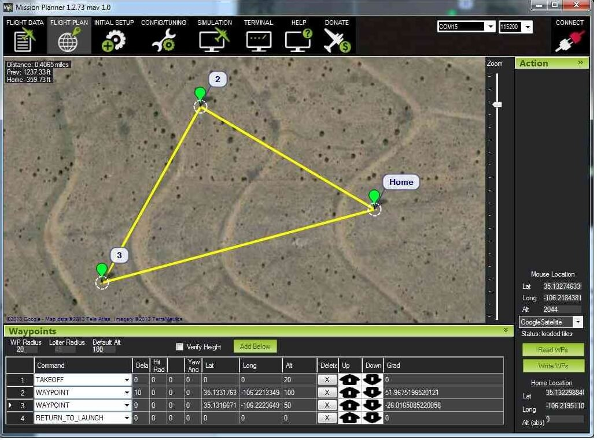

mission planner规划航点及任务
本文介绍的方法适用于apm固件类型飞行器。
设置家的位置
对于直升机/多旋翼,家的位置为解锁起飞的位置。如果飞行器执行rtl返航将返回到解锁起飞的位置，所以需要把飞行器放置在您想降落的位置。
对于固定翼，家的位置为首次获取到的gps定位位置，如果执行rtl将返回首次获取到gps定位的位置。
可以在地面站地图上移动“home”图标更改和设置家的位置。
说明
在下面的截图中，一个直升飞机的任务是从20米的自动起飞开始; 然后去航点2上升到100米的高度，然后等待10秒钟; 那么飞行器将进入航点 3（途中降至50米高度），然后返回起始点。 由于默认海拔高度为100米，所以返回到100米。 返回到到起始位置后，飞行器将着陆。 任务假设起始位置设在家的位置。
您可以输入航点和其他命令（有关详细信息，请参阅下面的任务命令部分）。在每行的下拉菜单中，选择所需的命令。列名称将会更改，以显示该命令需要哪些数据。可以通过点击地图输入纬度和经度。海拔高度是相对于你的起始高度/家的位置，所以如果你设置100米，例如，它将飞行100米以上。
默认Alt是输入新航路点时的默认高度。它也是RTL（返回启动）模式飞行高度，如果你有设置默认ALT，该高度就是rtl飞行高度;如果您没有设置，您的飞机将尝试维持开启RTL时的高度。
verify alt(验证高度）意味着任务规划器将使用Google Earth拓扑数据在每个航路点调整所需的高度，以反映下面的地面高度。所以如果你的航路点在山上，如果选择了这个选项，任务计划员将根据山的高度增加你的航点设置。这是一个很好的方法，以确保你不会撞到山！
规划好任务后，选择写入，并将其发送到APM并保存在EEPROM中。您可以通过选择“读取”来确认它是您想要的。
通过右侧按钮可以保存航行任务，加载航行任务，方便重复执行任务。
提示
预取：您可以下载离线地图。单击“地图工具”按钮》预读取航点路径（离线地图），然后按住Alt键绘制一个框以下载所选位置的图像。
绘制多边形：这允许您绘制多边形（右键单击），并自动在所选区域上创建航点。
快捷绘制多边形航线：鼠标右键菜单》绘制多边形》增加多边形点的绘制一个多边形》自动航点》simple grid然后点击Grid菜单，在弹出的窗口填入每个航点距离高度》确认，然后在定义在每个航点的动作。
将您的家庭位置设置到当前位置：追踪器的家》设置在这，它将将您的家庭位置设置为当前坐标。
Auto grid ：Auto grid功能可以生成“割草机”轨迹，以收集当地的图片。在地图上选择鼠标右键，选择多边形绘制需要的区域，选择auto WP--Grid菜单，按照对话框自动处理高度和距离，将自动生成如下网格航点（操作跟快捷绘制多边形形航线一致：
任务指令：在地图的下方有表格的列表，将按当前飞行器类型产生指令列表，并增加一列航向参数需要用户提供。这些指令包括：导航到航点，临近盘旋，执行特殊动作（如拍照等）和条件指令.任务指令：在地图的下方有表格的列表，将按当前飞行器类型产生指令列表，并增加一
列航向参数需要用户提供。这些指令包括：导航到航点，临近盘旋，执行特殊动作（如拍照等）和条件指令。全部的指令在Mavlink Mission Command Messages 定义。
任务指令参考
MavLink协议定义了大量的Mav_cmd 航点指令（通过MavLink_mission_item_message传递），飞控板处理这些指令和命令行参数，这些命令必须是与指定飞行器相关的，无效指令将被忽略。
每种飞行器只执行相关的命令和命令行参数，不相关的指令忽略不执行，可能还有些有用的命令行参数没有被处理，由于消息大小限制。
指令分类：navigation导航命令用于控制无人机移动，包括：起飞，移动到航点，改变
飞行姿态，着陆；DO动作命令：辅助功能，不影响飞行位置，比如相机快门，抛投伺服等；2.
Condition条件命令，用于延迟DO命令，至到条件满足，例如：UAV达到指定高度和指定航点的距离条件。对于指定航点，一般先执行NAV导航指令，只到完成导航任务或在航点一定误差范围内，然后在执行一些列DO命令当条件完成后。
Mission Planner支持的旋翼机指令：
[ ] MAV_CMD_MISSION_START：启动当前任务，自动（不用油门），参数：无
[ ] MAV_CMD_COMPONENT_ARM_DISARM：电机上电或掉电，参数：1，2
[ ] MAV_CMD_NAV_WAYPOINT：移动到指定航点，7个参数：2，5，6，7
[ ] MAV_CMD_NAV_RETURN_TO_LAUNCH：返回Home point或Rally Point,参数：无
[ ] MAV_CMD_CONDITION_DELAY：抵达航点后，延迟执行DO命令，参数：1 时间长度：s
[ ] MAV_CMD_CONDITION_DISTANCE：抵达当前航点指定的距离范围内，参数：1 距离
- [ ] MAV_CMD_DO_CHANGE_SPEED：改变目标水平速度或油门，参数：2 速度
- [ ] MAV_CMD_DO_SET_HOME：动作，设置Home Point位置，参数：1，5，6，7
- [ ] MAV_CMD_DO_SET_SERVO：动作，设定给定的伺服输出管脚PWM,参数：1，2
[ ] MAV_CMD_DO_SET_RELAY：动作，设定指定输出管脚高/低电平 参数：1，2、
[ ] MAV_CMD_DO_REPEAT_SERVO：给指定输出管脚指定pwm和中立波，按指定周期循环次
数，参数：1-管脚号 2-pwm 3-repeat# 4-cycle(s)
- [ ] MAV_CMD_DO_REPEAT_RELAY：给指定输出管脚指定高地电平，按指定周期循环次数，
参数：1-管脚号 2-pwm 3-repeat# 4-cycle(s)
[ ] MAV_CMD_DO_DIGICAM_CONFIGURE (Camera enabled only)： MAV_CMD_DO_DIGICAM_CONTROL (Camera enabled only)： MAV_CMD_DO_SET_CAM_TRIGG_DIST (Camera enabled only)： MAV_CMD_DO_SET_ROI：指定云台指向区域，参数：5，6，7
[ ] MAV_CMD_DO_SET_MODE：设置系统模式，preflight,armed,unarmed,参数：1
[ ] MAV_CMD_DO_JUMP ：切换到指定航点多次，参数：1，2
[ ] MAV_CMD_NAV_TAKEOFF：起飞指令，所有任务的第一次指令，参数：7
[ ] MAV_CMD_NAV_LAND：着陆，指定区域，参数：5，6 需退出Auto模式，切断动力 MAV_CMD_NAV_LOITER_UNLIM：飞到指定区域，然后盘旋，参数：5，6，7
[ ] MAV_CMD_NAV_LOITER_TURNS：指定区域盘旋，给定盘旋半径，参数：1，5，6，7 MAV_CMD_NAV_LOITER_TIME：指定区域盘旋，给定盘旋时间，参数：1，5，6，7
[ ] MAV_CMD_CONDITION_CHANGE_ALT ：按指定爬升或降落速度改变至指定高度，参数：1，7。
[ ] MAV_CMD_NAV_SPLINE_WAYPOINT：按照曲线形式航行到指定位置，参数：15，6，7 MAV_CMD_CONDITION_YAW：航向更改，参数：1，3，4
[ ] MAV_CMD_DO_MOUNT_CONTROL：控制相机云台，参数：1，2，3 pitch,roll,yaw度数
[ ] MAV_CMD_DO_PARACHUTE(Parachute enabled only)
[ ] MAV_CMD_DO_GRIPPER(EPM enabled only)
[ ] MAV_CMD_DO_GUIDED_LIMITS(NAV_GUIDED only)
[ ] MAV_CMD_NAV_GUIDED_ENABLE(NAV_GUIDED only)
3
相机控制与自动操作
相机快门和云台指令
3
个通道
在飞行器移动的间隔时间或指定的航点上执行快门动作，
如果相机安装在云台上，
还可
以控制云台的指向
对于简单的应用，
可以手动控制航点和快门指令，
对于复杂的测绘任务，
自动生成任意
区域的指令任务。
云台指令
:DO_SET_ROI
云台指向指定区域，
DO_MOUNT_CONTROL
云台控制到
roll
，
pitch,yaw
方向
伺服指令：
DO_SET_SERVO:DO_SET_RELAY
给指定的驱动信号